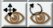
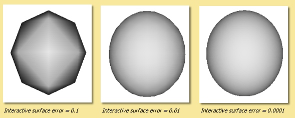

Click
left on
 then drag in the view window whilst holding the left mouse button
down.
then drag in the view window whilst holding the left mouse button
down.
Getting
Started
(Excerpted from the AOI Manual, by
Julian MacDonald)
1
Main Screen Layout
The screenshot below
shows the main window:
Note
that since version 1.8, Art of Illusion uses a UI based on Java
Swing. This means that the 'Look and Feel' of the interface can be
customised to a certain extent so your screen may or can look
different to that shown here.
The main window is divided into
several area: the 4 interactive view windows,
the Object List and the Object Properties
Panel, and the tool icons, each of which are
described in detail below. The side panels are dockable so that
the display can be configured as required - simply drag the top bar
of the Object List, the Properties Panel or the Animation Score to
move the panel to the top, bottom or sides of the display.
2
View Windows
The 4 windows in the main
part of the screen show different views of the scene. By default, the
two upper windows and the lower left window show parallel or
orthogonal views of the front, side and top respectively and the
lower right window shows a perspective view from the
currently-selected camera. These views can be easily altered using
the drop-down menus at the top of each view window.
The window
with 'focus' or the selected window is the one with the thicker
outline (the upper left window in the example screenshot above). This
is relevant for any operations that work on single view windows. To
change the selected window, simply move the cursor to the required
window and click.
All view windows can be panned, zoomed
and rotated independently using the camera controls:

or by using keyboard shortcuts:
Pan
Controls:
Click
left on
 then drag in the view window whilst holding the left mouse button
down.
then drag in the view window whilst holding the left mouse button
down.
Hold down the right mouse button and drag in any view window.
Zoom/Magnification
Controls:
Select
Pan mode by clicking on
 then hold down CTRL while dragging the right mouse button up (zoom
out) or down (zoom in) or
then hold down CTRL while dragging the right mouse button up (zoom
out) or down (zoom in) or
Use the scroll wheel - scrolling down zooms in and scrolling up zooms out. Holding down ALT while using the scroll wheel zooms in/out faster.
Magnification of parallel views can also be accomplished by entering an appropriate magnification level from the drop-down menu at the top of each view window.
Rotation
Controls:
Rotation
of each view window is achieved by clicking on
 and then dragging in the relevant view window whilst holding the
left mouse button. Holding SHIFT while dragging constrains the
rotation to a vertical axis and holding CTRL rotates the view about
the axis perpendicular to the screen.
and then dragging in the relevant view window whilst holding the
left mouse button. Holding SHIFT while dragging constrains the
rotation to a vertical axis and holding CTRL rotates the view about
the axis perpendicular to the screen.
Alternatively,
rotation can be performed by holding down the ALT key while dragging
with the mouse. The SHIFT and CTRL modifiers also work with this
method.
If any objects are selected, the centre of the
rotation will be at the centre of that selection.
Rotating
any of the fixed-view windows (i.e. front, side and top) means that
that view no longer shows that fixed view and thus the name for that
view changes to 'other'. Selecting the appropriate view name from
the drop-down list will restore the default view.
If there is more than
one camera in the scene, it is possible to see the view from any of
them by selecting the appropriate one from the drop down list.
If
you find it easier to work with one large window, select Scene ->
One View from the top menu bar and the currently selected window
will fill the workspace.
One other thing that you need to know
is the orientation of the coordinate system used, as this varies
between 3D programs. Art of Illusion uses a right-handed coordinate
system - when the positive x-axis points right and the positive
y-axis points up, the positive z-axis points out of the monitor. If
you are facing front, the y-axis is up and down, x is left and right
and z is forward and backward. The axes for the default viewports are
thus as follows:
Sometimes it is useful to be able to quickly visualise the whole
scene or a selected object within the view windows. This is achieved
through Scene -> Frame Selection with Camera, which adjusts
the zoom and centering of the non-camera view windows so that the
selected objects just fit within them, and Scene -> Frame Scene
with Camera which similarly fits the whole scene into the
windows.
3 Display
Mode
There are 5 possible ways in which
to view the scene in real time: Wireframe preview, Shaded
preview, Smooth preview, Textured preview and
Transparent preview. The type of preview is selected from the
top menu bar Scene -> Display Mode ->
Wireframe/Shaded/Smooth/Textured/Transparent and affects the view
window with 'focus'. The difference between them is shown in the
figure below:
The choice of preview mode affects performance of real time
camera movements with speed potentially decreasing from Wireframe ->
Shaded -> Smooth -> Textured. Depending on the specifications
on the computer being used, this will be more noticeable on complex
scenes. The preview type can be set independently for each view
window.
Note that Shaded and Smooth previews show colours
which match, albeit in a simplistic way, the textures assigned to
each object. The Textured preview gives a much closer representation
of the actual textures.
4
Icons
At the upper left of the screen
are the icons for quick selection of common tools. They allow you
create new objects and to move, rotate and scale existing objects.
Resting the cursor over the icons will bring up a tooltip to describe
its function.
|
The image on the right gives a brief description of each icon and the tools themselves are explained in more detail in relevant sections of this manual. |
|
For each tool used, there is a
line of text at the bottom of the screen which briefly describes its
use.
With the Move tool and Rotate tool, objects can be moved
one pixel at a time with the keyboard arrow keys and 10 pixels at a
time when the ALT key is used with the arrow keys.
The
Spacebar can be used to quickly switch between tools; pressing it
will toggle selection between the Move/Select tool and the last tool
used.
5 Object
List and Properties Panel
Finally, on
the right hand side of the main screen are the Object List (at the
top by default) and Object Properties Panel (at the bottom by
default).
Not surprisingly, the Object
List is a list of all the objects, including cameras and
lights, in the scene. Objects can be selected from this list for
editing simply by clicking on them. To select more than one object,
hold down the <ctrl> key while clicking or, to select a range,
click on an object and <shift> click on another to select all
the objects in between.
Some types of object (e.g. curves,
splines and meshes) allow editing additional to the standard move,
scale and rotate. Double-clicking on objects in the Object List opens
up the relevant editing tool.
This list also allows the
hierarchical arrangement of objects so that a number of objects can
be 'children' of other objects. Moving, scaling and rotating 'parent'
objects can result in the children objects also being transformed
depending on the tool setting. An object can be made a child of
another object by clicking on it and dragging it underneath the
intended parent. An arrowed bar shows the position of the object in
the list. Indentation of this bar indicates that the object can
become a child of the object above it in the list. Releasing the
mouse button causes this to happen and the parent object then has a
down arrow displayed next to it to indicate this hierarchy. Clicking
on this arrow hides the children and the arrow changes to a right
pointing arrow.
Arranging a parent-child hierarchy between
objects can also be useful during animation.
|
|
In the example on the left,
the object hierarchy for a toothpaste tube scene is given. In this
case, 'toothpaste' and 'lid' are children of 'toothpaste tube' and
'lid end' is a child of 'lid'. Transformations made to 'toothpaste
tube' can be set so as to affect all the objects mentioned,
whereas those applied to 'lid' can affect only 'lid' and 'lid
end'. |
Right-clicking on objects
in the Object List displays a menu of operations available for that
object including various editing tools, application of textures and
materials and the ability to hide/show that
object. The options are also available via a context menu which
can be brought up by right clicking objects directly in the view
windows.
The Object Properties Panel shows the various
editable properties for the currently selected objects as shown in
the example below.
|
|
The properties that appear in
this pane depend on the type of object(s) selected. In this
example, the properties for a sphere object are displayed and can
be edited. |
6
Hiding/Showing Objects
It is sometimes
useful to be able to hide objects from view, for example in a
complicated scene where some objects overlay those you wish to work
on. To hide objects, select them and click on Object -> Hide
Selection. Alternatively right click the selection in the Object
List or the object itself in one of the view windows and choose Hide
Selection. This will also hide them in the rendered image
which is useful when you just want to test the rendering of certain
objects. Hidden objects are shown as grey in the Object List.
To
show objects again, select them and click on Object -> Show
Selection or right click the object(s) in the Object List or in
the view windows and select Show Selection.
7
Grids
It is often helpful to be able to
position objects accurately and switching on the grid will aid this.
The grid is activated via Scene -> Grids which brings up
the following dialogue box:
|
|
The grid spacing determines the spacing between the lines of the grid seen in each window. To actually see the grid, you need to tick the Show Grid box. It is also possible to activate a Snap to Grid mode which forces objects to be positioned at discrete locations rather than allowing complete freedom of movement. Tick the Snap to Grid box to enable this and enter the relevant number of Snap-to-Subdivisions. This is the number of uniformly distributed allowable positions within each grid square. So, the higher this number, the more freedom of movement there is. In the example on the left, objects will snap to every 1/10 of the grid spacing if the Snap to Grid box is ticked. |
Switching on the grid will
display the grid on all view windows. In addition, perspective views
will display a ground plane.
8
Coordinate Axes
When navigating around
the scene, it is sometimes possible lose track of your orientation.
To aid you in this situation, you can turn on Coordinate Axes via
Scene -> Show Coordinate Axes. This displays 3 lines
labelled x,y and z representing the axes as seen below:
If
desired, the coordinates axes can be turned off via Scene ->
Hide Coordinate Axes.
9
File Menu
The leftmost item on the top
menu bar, File allows various file operations to be performed.
Clicking on this will bring up the File menu as shown below:
Export
AoI can save 3D models/scenes in 3D formats other than AoI. Export
can be made to either Wavefront OBJ, VRML or Povray v3.5 files
including partial support for textures. You can select whether to
export the whole scene or just the selected object and can specify
the maximum surface error in the appropriate dialogue shown below. A
lower value for the error will result in a more complex and,
therefore, larger export file.
OBJ and VRML exported 2D
textures are saved as image maps of the size and quality specified in
the relevant dialogues.
There are additional options for VRML
and Povray as shown in the dialogues below:
|
|
|
|
|
VRML export option dialogue |
OBJ export option dialogue |
Povray export option dialogue |
Link to External File
This is a way of using an object from another AoI file in the current
scene via a dynamic link to that file. Using this method, changes
made to the source object automatically affect any files which have
links to that object. Selecting this option will display a simple
dialogue allowing the selection of the source file and the object
within that file that is to be linked to.
Save
saves the current file with the existing name or will prompt for a
new name if the file has not been saved previously. A 'safe save'
method is used which ensures that the file is saved properly before
the existing file is overwritten.
Save As allows the
file to be saved with a different name.
Quit closes
down all currently open AoI files and shuts down AoI completely. You
will be prompted to save any of the files that have not yet been
saved.
10 Edit
Menu
The Edit menu on the top
menu bar contains some very useful selection and basic object
manipulatiom tools.
The menu looks like this:
|
Undo/Redo undoes the
last action or redoes the last undo, including selections. |
Make Live Duplicate
makes a special copy of any currently selected object in that they
are dynamically linked so that any changes made to one are
automatically made to all other live duplicates. Note that this
method of copying uses significantly less memory than making several
normal copies via the copy/cut/paste tools.
Sever
Duplicates ceases the association between live duplicates so that
they become independent objects
Preferences allows
various general parameters to be set up for future instances of AoI.
Selecting this option produces the following dialogue:
|
|
There
are 2 tabs for preferences: General and Shortcuts. The
preferences under the General
tab are described below: |
The
Interactive Surface Error defines the surface accuracy of
objects displayed in the main window and the object editors. The
lower the value, the more acccurate the surface displayed is as shown
below. Bear in mind, however, that a low surface error will result in
a poorer performance in terms of speed.

Maximum
Levels of Undo defines how many of the last operations are stored
by AoI and hence how many can be undone. The greater this number is,
the more steps can be undone, but the greater the memory
requirement.
Use OpenGL for Interactive Rendering By
default, Art of Illusion uses OpenGL, through the JOGL libraries, to
speed up the interactive displays in the main window and object
editors. If there are problems with this, the option can be switched
off here to allow software rendering.
Keep Backup Files
When Saving creates a backup of the last saved file when the file
is saved with the same name. The backup file has the additional
extension .bak.
Lastly, the Language defines which
language all the dialogues will be shown in. As of version 2.0, you
can choose from Danish, English(United States), French, German,
Italian, Japanese, Portuguese, Spanish or Swedish.
The
Shortcuts tab of the preferences
dialogue is shown below. This dialogue allows keyboard
shortcuts, additional to those described in the Command
Reference, to be set up. The keys defined trigger scripts
to carry out particular tasks. New shortcuts can be added or existing
ones can be edited. This allows Beanshell scripts to be
written in a special dialogue to carry out the series of commands
required.
|
The default shortcuts
are: |
|
11
Using Template Images
Art of Illusion
allows the background of the view windows to be set to an image. This
is useful when modelling objects that benefit from a reference image.
To select an image to assign to the background, click in the view
window you want the template image to be displayed and then select
Scene -> Set Template Image . This brings up a dialogue
allowing the choice of an image in either .jpg, .gif or .png format.
After selecting the image, it will be displayed as the background of
the selected view window.
To hide the image, select Scene
-> Hide Template and to show it again select Scene ->
Show Template . These actions can also be carried out to
hide/show template images in the various editing windows.